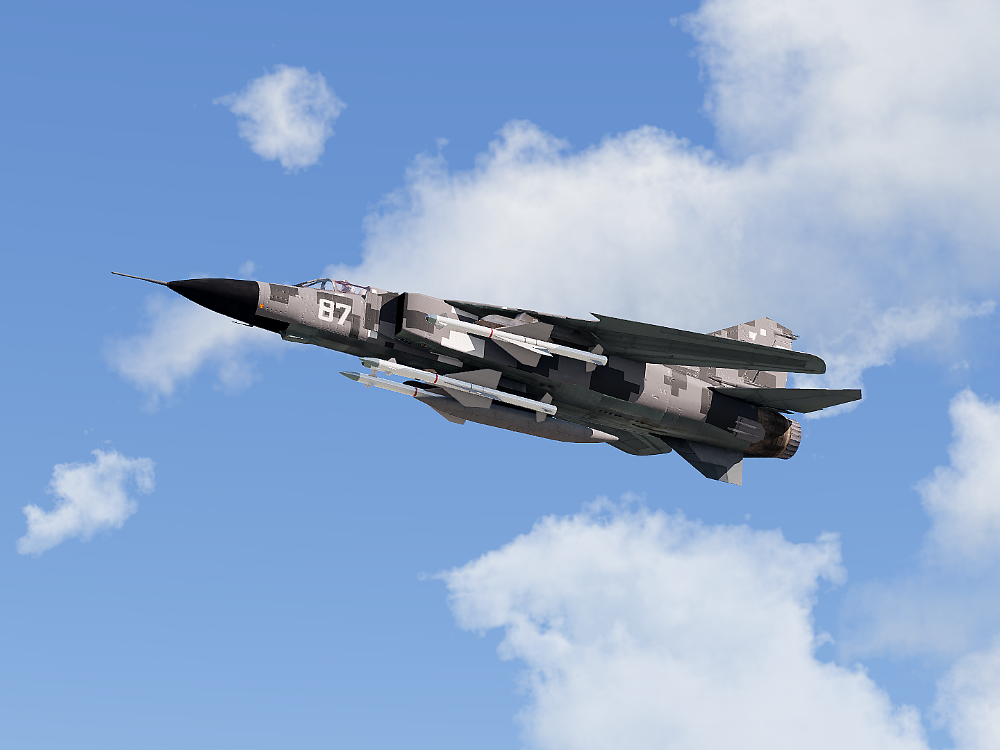

PDZ domestic multirole fighter
| Mig-23UDL | |
|---|---|
|  | |
| Mig-23UDL during a flight demo, circa. 2021 | |
| Information | |
|---|---|
| Type: | Multirole Fighter |
| National Origin: | Zegra |
| Manufacturer: | Mikoyan-Gurevich / ZTI |
| Status: | In service |
| Primary Users: | Zegra |
| Number Built: | 102 |
| History | |
| Manufactured: | 2020-Present |
| Introduction Date: | 2 February 2021 |
| Variants: |
Mig-23UDL (2020-2021) Mig-23UDL-E1 (2021) Mig-23UDL-E2 (2021-Present) |
The Mikoyan MiG-23UDL (Russian: Микоян МиГ-23УДЛ) is a modernized multirole fighter aircraft, developed as a late-life extension of the original MiG-23 “Flogger” platform. Requirements were issued by the ZTI, and development was undertaken in cooperation with several national defense-industrial contractors. The UDL (short for “Универсальный Дальний Легкий”, or Universal Long-Range Lightened) was designed to refurbish and reintroduce stored Soviet-era MiG-23 airframes with 21st-century avionics, sensors, and weapons systems. Initiated in the early 2020s, the program offered a cost-effective path toward modern multirole capability without the expense of acquiring entirely new aircraft.
Though based structurally on late-model MiG-23ML and MLD airframes, the UDL incorporates composite control surfaces, an upgraded cockpit with multifunction digital displays, a lightweight active electronically scanned array (AESA) radar, and a modular fire-control system. The platform is capable of deploying modern precision-guided munitions alongside legacy Soviet-era ordnance, and supports a full range of air-to-air weapons including the domestically-produced ZK-11 high-agility IR missile, as well as inherited R-27 variants. Modular datalink architecture, missile approach warning systems (MAWS), and integrated electronic countermeasures allow for scalable configuration across different operational roles. Select airframes retain the ability to carry tactical nuclear munitions.
The program resulted in three primary variants: the initial MiG-23UDL prototype and pre-production batch, followed by the refined MiG-23UDL-E1, and culminating in the more capable and widely fielded MiG-23UDL-E2. Although production numbers remain small compared to the original MiG-23 family, the UDL has demonstrated impressive results in national trials and is actively employed in multirole duties including interception, close air support, and advanced pilot training.
No dedicated strike variant of the UDL was produced, though the MiG-27’s reinforced fuselage and undercarriage were used as references during the configuration of the E2 standard for extended ground-attack operations. While lacking the MiG-27’s armored tub and fixed optical targeting suite, later UDLs were evaluated with externally mounted designator pods to enable delivery of laser- and satellite-guided munitions.
The MiG-23UDL’s armament reflects the modernization goals behind its upgrade program, balancing legacy hardpoint compatibility with updated fire control and targeting systems. The baseline UDL retained the GSh-23L 23 mm twin-barrel autocannon and introduced the SUV-23UDL fire control suite, integrating a lightweight AESA radar and multifunction digital displays. Air-to-air loadouts typically consist of two domestically-produced ZK-11 high-agility infrared-guided missiles, supported by either R-27R (semi-active radar) or R-27T (infrared) medium-range missiles. The fire control system allows for simultaneous tracking and cueing of multiple targets and is fully integrated with helmet-mounted sighting systems, offering a marked improvement over legacy variants.
For strike missions, the UDL is cleared to employ Kh-25ML and Kh-29L laser-guided missiles with support from a centerline-mounted targeting pod. Standard loadouts include up to four S-13 rocket pods, various general-purpose FAB and OFAB bombs, or two RBK-500 cluster munitions, with a total payload capacity of up to 3,500 kg (7,700 lb). Compatibility with precision-guided munitions such as the KAB-500L and satellite-guided KAB-500S-E has been implemented on later production airframes, supported by improved avionics and reinforced pylons. Limited integration testing has also been carried out with the Grom-E1 air-to-surface missile, though it remains reserved for specific platforms.
The UDL’s electronic warfare capability includes the optional carriage of ECM pods in place of outer air-to-air missiles, as well as a standard countermeasure suite featuring UV-based missile approach warning sensors, flare dispensers, and active chaff ejectors. Later-production models incorporate wingroot modifications for dual-rail short-range missile launchers, improving readiness and missile count. As with late-generation MiG-23MLD variants, the UDL retains the ability to carry a single tactical nuclear munition—either the RN-24 or RN-40—via a specialized fuselage adapter, though this remains limited to selected airframes under national strategic protocols.